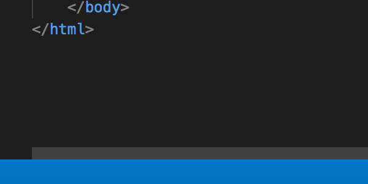

浮动会使元素向左或者向右移动，其周围的元素也会重新排列
一个浮动元素会尽量向左或向右移动，直到它的外边缘碰到包含框或另一个浮动框的边框为止。
浮动元素之后的元素将围绕它。
浮动元素之前的元素将不会受到影响。
如下
对下面图像设置有浮动以后，文本流会环绕它
元素的水平方向浮动，意味着元素只能左右移动而不能上下移动。一个浮动元素会尽量向左或向右移动，直到它的外边缘碰到包含框或另一个浮动框的边框为止。 浮动元素之后的元素将围绕它。浮动元素之前的元素将不会受到影响。如果图像是右浮动，下面的文本流将环绕在它左边：
如果有多个元素都有浮动属性，它们彼此相邻
注意：float 会使元素脱离正常的文档布局流，并粘贴到其父容器的左侧，如上边，div的实际高度是文字所占据的高度，当调整浏览器的窗口时图片可能突破包裹它div的高度， 这时候可以为div设置 display:inline-block
可以通过 float 属性来实现首字下沉特效如下
This is my very important paragraph.
I am a distinguished gentleman of such renown that my paragraph
needs to be styled in a manner befitting my majesty. Bow before
my splendour, dear students, and go forth and learn CSS!
可以使用 float 来实现多列布局
请检查您的代理服务器设置或与网络管理员联系，以确保代理服务器正常运行。如果您认为自己不需要使用代理服务器，请执行以下操作： 依次转到“应用”>“系统偏好设置”>“网络”>“高级”>“代理”，然后取消选中所有已选的代理。
请检查您的代理服务器设置或与网络管理员联系，以确保代理服务器正常运行。如果您认为自己不需要使用代理服务器，请执行以下操作： 依次转到“应用”>“系统偏好设置”>“网络”>“高级”>“代理”，然后取消选中所有已选的代理。
float:left请检查您的代理服务器设置或与网络管理员联系，以确保代理服务器正常运行。如果您认为自己不需要使用代理服务器，请执行以下操作： 依次转到“应用”>“系统偏好设置”>“网络”>“高级”>“代理”，然后取消选中所有已选的代理。
float:left请检查您的代理服务器设置或与网络管理员联系，以确保代理服务器正常运行。如果您认为自己不需要使用代理服务器，请执行以下操作： 依次转到“应用”>“系统偏好设置”>“网络”>“高级”>“代理”，然后取消选中所有已选的代理。
float:right请检查您的代理服务器设置或与网络管理员联系，以确保代理服务器正常运行。如果您认为自己不需要使用代理服务器，请执行以下操作： 依次转到“应用”>“系统偏好设置”>“网络”>“高级”>“代理”，然后取消选中所有已选的代理。
注意：如果将上面的中间列表的 float 更改为 right 就会看到div的顺序为
div1 div3 div2
这是因为第二个div的源码顺序上比第三个要高,DOM 上第二个div先出现并先声明了 float:right,所以浮动顺序上也会比第三个要高所以先出现在右侧
由于所有在浮动下面并且没有浮动属性的内容都会围绕浮动元素进行填充，这样就会带来一些奇怪的问题
由于图片设置了右浮动，所以这一段话将会围绕着图片进行渲染。
对这一句话设置了清除浮动 clear:both，它将不再围绕图片进行渲染，而是在正常的位置
clear可以取的值有：